1과목: 해양학개론
1. 다음 중 해수 온도차 발전(OTEC)의 후보지로서 가장 적합한 곳은?
2. 2층 해양의 경우 상층에서 시계방향의 회전흐름이 있고, 저층에서 유속이 없다면, 등압면과 두층사이 경계면의 형태는 중심부에서 외부로 향하여 어떻게 나타나는가?
3. 해양에서 탄산염 퇴적물이 가장 많이 퇴적되어 있는 곳은?
4. 지진파 중 P파 전달속도를 결정하는 계수로 가장 거리가 먼 것은?
5. 에크만 수심에 대한 취송류 모델에서 고려하는 힘은?
6. 심해파(深海波)에 대한 설명 중 맞는 것은?
7. 다음 중 열수활동과 직접 관계가 없는 것은?
8. 대양에서 영구수온약층(permanent thermocline)이 가장 깊은 수심에서 나타나는 해역은?
9. 다음 중 자기층서(magnetostratigraphy)의 문제점이 될 수 없는 것은?
10. 다음 중 영양염의 함유량이 가장 낮은 지역은?
11. 서태평양의 열대해역에서 발생하는 시속 119km 이상의 열대성 저기압은?
12. 대양의 경우 해표면 염분이 최대인 해역은?
13. 심해저 망간단괴를 최초로 발견한 해양 탐사선은?
14. 반일 주조의 조석주기가 정확히 12시간이 아닌 이유는?
15. 다음 중 망간단괴의 품위를 결정하는 원소가 아닌 것은?
16. 다음 중 지형류를 계산할 때 필요치 않은 것은?
17. 다음 중 후열도 분지(backarc basin)에 해당하는 것은?
18. 수중 통신에 가장 많이 쓰이는 것은?
19. 우리나라 근해에서 가장 풍부한 점토 광물은?
20. 해수가 증발할 때, 염분이 증가함에 따라 화합물은 일련의 과정으로 침전한다. 그 중 첫 번째 침전물은?
2과목: 해양수리학
21. 폭이 1m인 수로에서 도수 전후의 수심이 각각 1m, 3m 였다. 유속이 일정한 경우 유량은?
22. 물질의 확산의 정도를 나타내는 동력학적 난류확산계수(dynamic eddy viscosity coefficient)의 올바른 차원은?
23. 기하학적 상사조건에 포함되지 않는 것은?
24. 취송류(wind drift current)에 관한 설명 중 틀린 것은?
25. 해양구조물에 작용하는 파랑하중 성분인 관성력계수에 영향을 미치지 않는 인자는?
26. 해안선의 변형을 예측하는데 주로 사용하는 모델은?
27. 신뢰성 있는 평균 해면을 구하기 위해서는 최소한 몇 년 이상의 조선관측 기록이 있어야 하는가?
28. 조고가 6m이고 평균 수심이 30m인 반일주조와 연관된 표면류의 유속은?
29. 물질확산에 관한 Fick의 법칙에서 단위면적을 통한 단위시간당 물질수송량 F는 어떤 성질을 가지는가?
30. 원빈대(原濱帶)의 표사와 가장 관계가 먼 것은?
31. 다음은 연안표사량의 분포에 관한 설명이다. 틀린 것은?
32. 파의 천수계수(Ks)에 영향을 미치지 않는 것은?
33. 천해역에서 해수면 상 일정한 높이에서 일정한 크기와 바람이 분다고 할 때 4계절 중, 표층에 도달한 태양열 에너지가 바람에 의한 해수의 혼합작용에 의해 가장 용이하게 저층에 도달할 수 있는 계절은?
34. 조석의 일조부등(日潮不等)에 대한 설명 중 가장 거리가 먼 것은?
35. 조위관측을 위한 검조기의 형식으로 적합하지 않은 것은?
36. 직경이 비교적 작은 원형 실린더에 작용하는 파랑하중이 최대가 될 때의 파의 위상은?
37. 파고 4m, 주기 8sec 인 심해파가 수심 10m 되는 지점에 도달했을 때 파고가 3.8m로 변하였다. 이 때 굴절계수는? (단, 천수계수는 1.06이다.)
38. 수평축척 1/1,600, 연직축척 1/100인 모형수조에서 조류의 모형실험을 실시하였다. 이 때 원형에서 12시간의 조석주기에 해당하는 모형에서의 시간과, 모형실험에서 10cm/sec의 유속은 원형에서 얼마에 대한 값인가?
39. 해양의 해수의 흐름을 크게 세 가지로 나누었을 때 가장 옳은 것은?
40. 해안침식의 주요 요인에 해당되지 않는 것은?
3과목: 해양구조공학
41. 다음 폰툰(pontoon)에 관한 설명 중 맞지 않는 것은?
42. 다음의 구조물 중에서 구조 주부재가 인장력 또는 압축력으로 하중을 지지하는 것은?
43. 다음과 같은 원형단면 a-a에 하중 P가 작용하여 직경이 0.1cm 만큼 감소되었다. 이 때 이 부재의 늘어난 길이는? (단, 포아송비는 0.4 이다.)
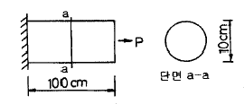
44. 다음 트러스에서 bc 부재의 부재력은?
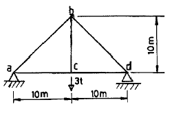
45. 그림과 같은 단면적의 보를 사용한 경우 강도를 바르게 표현한 것은? (단, a＞b 이다.)
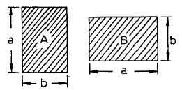
46. 공기 중의 익형항력계수(翼型抗力係數) CD는 다음 중 어느 계수의 함수인가?
47. 주응력면(主應力面 ; Principal plane)에 관한 다음 설명 중 틀린 것은?
48. 단순보에서 전단력이 0 이 되든가 또는 부호가 바뀌는 곳에서 최대 굽힘모멘트가 생긴다는 것이 성립되지 않을 때는?
49. 아래 구조물 AB의 지점 B에서의 수평반력의 크기는? (단, 구조물의 폭은 1m, 물의 단위중량은 1 ton/m3 이다.)
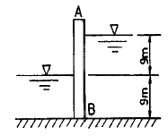
50. 다음과 같은 구조물을 상온(15℃)에서 부재 내에 응력이 발생하지 않도록 설계하였다. 선 팽창계수가 0.00001/℃ 라 할 때 구조물이 안전할 수 있는 최저온도는? (단, 구조물의 탄성계수는 2×106 kg/cm2 이고, 허용인장응력은 160 kg/cm2 이다.)
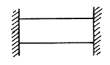
51. 사석방파제의 사석의 중량을 Hudson공식에 의거하여 산정하는데 있어서 고려하여야 할 사항이 아닌 것은?
52. 좌굴하중에 대한 설명 중 잘못된 것은?
53. 수심이 10m 내외 정도이고, 수면의 변화가 너무 크지 않으며 해저의 기초지반이 튼튼한 곳에 적합한 방파제는?
54. 수심 20m 지점에 구조물이 설치되었다. 이 지점에서 파고 4m의 파가 내습하면 이 파가 갖는 1m2당의 에너지는? (단, 해수의 비중은 1, 중력가속도는 10 m/sec2 이다.)
55. 항내에 계류된 선박의 선체운동 중에서 변위가 크고, 하역작업에 가장 큰 영향을 미치는 운동성분들로 구성된 것은?
56. 보(beam)에서 단면력이라고 부르지 않는 것은?
57. 직립벽에 작용하는 파압 중 최대파압을 일으키는 것은?
58. 반경 r인 원형단면에서 단면 2차 모멘트에 대한 회전반경은?
59. 그림과 같이 A점이 고정지점이고, B점이 롤러지점인 길이 L의 보에 등분포하중을 만재했을 때 B의 수직반력은?
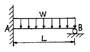
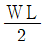
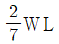
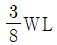
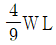
60. 다음과 같은 단주에 100t의 압축력이 O점으로부터 X축을 따라 움직일 때 bc면에 인장력이 발생하지 않기 위한 최대거리 e는?
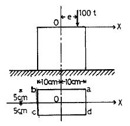
4과목: 측량학
61. 다음 중 항공사진의 특수 3점이 아닌 것은?
62. 다음 중 해상 위치 측량법에 속하지 않는 것은?
63. 다음 중 우리나라 수준원점의 장소와 표고는?
64. 각관측법에서 측선수가 26일 때, 측각해야 할 각의 수는 몇 개인가?
65. 그림에서와 같이 O점의 수심을 측정한 결과 20m 이었다면 PD에서의 수심이 15m 일 때 P에서 O까지의 수평거리는? (단, θ는 30° 이다.)
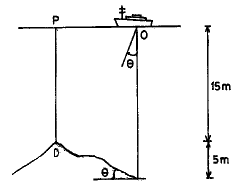
66. 다음 중 연안 및 대륙붕 수역의 개발관리를 위한 바다의 기본도구로서 구비되어야 할 4대 요소에 포함 되지 않는 것은?
67. 음향 측심기에서 전기 펄스를 음향 펄스로 변환하여 수중으로 방사하는 기기는?
68. 다른 위치결정 방법과는 달리 시통성, 기상, 대기굴절 등과 관계없이 가속도 관측만으로 가능하고 수중에서 목표물 확인 등에 많이 사용되는 항법은?
69. GPS 측위에서 L1 Band의 파장은 약 얼마인가?
70. 다음 특수 해도의 설명 중 해저 지형도를 가장 잘 설명한 것은?
71. 가로 20km, 세로 10km의 해안선을 촬영할 때 입체 모델수는 몇 개인가? (단, 사진크기 23cm×23cm, 축척 1/20,000, 종중복 60%, 횡중복 30%)
72. 다음 중 수심측량의 펄스 시간차 관측법에 대한 장점이 아닌 것은?
73. 해안선을 결정하는데 기준이 되는 면은?
74. 연안의 제반 지형 물표가 상세하게 표시되어 있는 것은?
75. 해수면의 높이는 조석의 영향 때문에 수시로 변하므로 측량시에는 조석의 높이를 고려하여 음향, 측심기록에 보정하여야 한다. 이 때 조고 보정은 어떻게 하는가?
76. 임의 점의 수심을 숫자로 도상에 나타내는 지형 표시법으로 하천이나 항만의 수심측량 결과를 표시하는데 주로 사용되는 방법은?
77. 음파탐사법 중 음향측심과 마찬가지로 소수의 음원과 수파기 만으로 대상지역 수면을 항해하면서 반사파를 연속적으로 기록해 나가는 방식은?
78. 다음 중 지형의 특징을 나타내는 선이며, 등고선 작도에 참조 하여야 할 선은?
79. 다음 중 해상 위치 관측 기계가 아닌 것은?
80. 초점거리 18cm인 카메라로 평지를 지면에서 3600m의 촬영 고도로 촬영한 사진의 축척은?
5과목: 재료공학
81. 아래 그림은 선철의 용광로이다. 선철 유출구는?
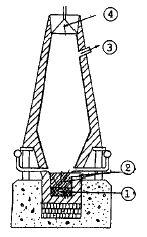
82. 철근 콘크리트 구조물에서 철근이 녹슬거나 부식하는 것을 방지하기 위해 사용되는 혼화제를 방청제라 하는데 이에 해당하지 않는 것은?
83. 시멘트를 저장할 때의 주의사항 중 잘못된 것은?
84. 다음 연성 천이온도(ductility transt)에 관한 설명 중 잘못된 것은?
85. 다음 중 콘크리트의 양생 방법이 아닌 것은?
86. 재료의 선형 탄성변형에 대한 설명 중에서 틀린 것은?
87. 철류에 대한 녹의 발생에 관한 사항 중 틀린 것은?
88. 다음 중 직경 d인 원형단면인 단면 2차 극모멘트를 나타내는 식은?
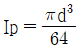
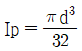
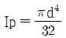
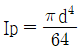
89. 다음 중 금속의 피막 생성법에 해당하지 않는 것은?
90. 열간가공과 냉간가공의 기준은 다음 중 어느 것인가?
91. 다음과 같은 용어의 설명 중 틀린 것은?
92. 일반수중콘크리트는 수중 시공시의 강도가 표준 공시체 강도의 몇 배가 되도록 배합강도를 설정해야 하는가?
93. 금속 재료의 경도 시험이 아닌 것은?
94. 다음 재료 중 취성이 가장 큰 것은?
95. 다음 매스콘크리트에 대한 설명 중 잘못된 것은?
96. 수중 콘크리트의 슬럼프 값이 가장 커야 할 경우는?
97. 내구성이 크고 가벼운 요트 재료로서 적합한 것은?
98. 다음과 같은 각 재료 중에서 유기재료에 해당하는 것은?
99. 바깥지름 25cm, 안지름 20cm, 길이 3m의 철제 중공원주가 70t의 하중을 지지할 때의 변형률 ε은? (단, E = 1.25 × 106 kgf/cm2)
100. 다음 강의 열처리 중 마르텐사이트의 취성을 방지하기 위해서 행하는 열처리로 내부응력의 제거, 강도 및 인성을 부여하는 목적을 가지는 열처리 방법은?